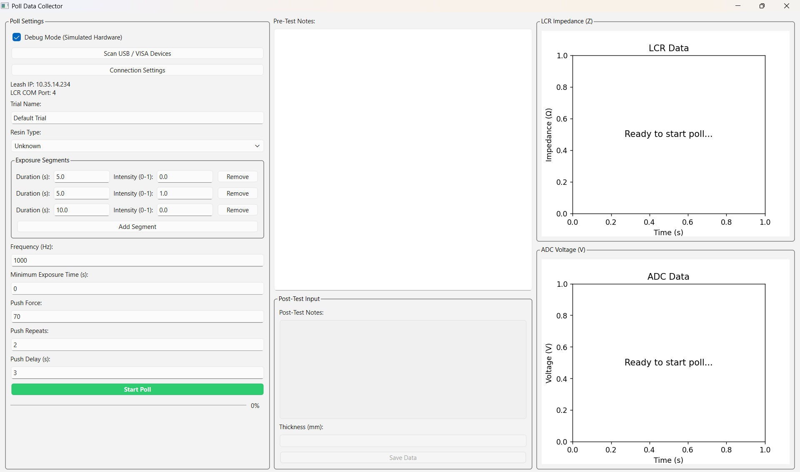
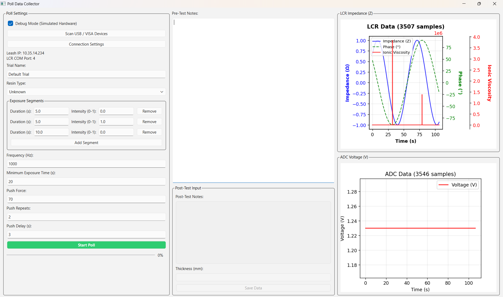

Multi-source data collection
Collects impedance and phase from an LCR instrument, voltage from an ADC on a custom board, and timing or state events from printer debug mode.
Formlabs project · dielectric analysis · resin exposure
DEA Poll Data Collector is a Python application that coordinates resin exposure, impedance measurement, ADC sampling, live plotting, and structured data export into one repeatable workflow.
exposure_schedule = [
{"duration_s": 5, "intensity": 0.0},
{"duration_s": 5, "intensity": 1.0},
{"duration_s": 10, "intensity": 0.0}
]
streams = ["LCR impedance", "ADC voltage", "printer debug events"]
save_format = {
"metadata": "json",
"measurements": ["lcr.csv", "adc.csv", "poi.csv"]
}Big idea
The goal of this project was to automate the data collection workflow for dielectric analysis during resin exposure. Instead of manually coordinating exposure timing, instrument reads, printer-state information, and file organization, the application gives the team one interface for configuring a poll and collecting synchronized data.
The most important win was proving that the workflow could be automated before the analysis itself was complete. That matters because a reliable data collection pipeline makes future material experiments faster, more consistent, and easier to compare.
Collects impedance and phase from an LCR instrument, voltage from an ADC on a custom board, and timing or state events from printer debug mode.
Provides a simple PyQt interface for resin type, trial notes, exposure segments, frequency, push parameters, connection settings, and debug mode.
Displays impedance, phase, ionic-viscosity proxy values, and ADC voltage during the poll, making it easier to see whether a run is behaving as expected.
Saves raw LCR, ADC, and point-of-interest streams as CSV files with JSON metadata so later analysis can start from clean, predictable files.
System design
The application separates the experiment into controller interfaces. The LCR path handles impedance measurement, the ADC path records voltage from a custom board, and printer debug mode provides exposure and system-state context. The central poll controller starts the run, manages timing, collects samples through worker threads, and saves the result as an organized dataset.
Screenshots and demo
These screenshots show the collector before and after a simulated poll run. Add more screenshots
by placing them in docs/assets/ and copying one of the figure cards below.


Video
The current embedded clip is a short draft screen recording. I additionally have my quick description of the project.
Install and run
The public repo contains a stripped project version with sensitive project information omitted. Install the Python dependencies, then launch the PyQt application.
git clone https://github.com/isaiahmurray-sudo/resin-poll-data-collector.git
cd resin-poll-data-collector
pip install -r requirements.txt
python poll_data_collector.pyKey takeaways
The project showed that the experiment workflow could be turned into a repeatable software pipeline. A single poll now has a defined setup, live feedback, synchronized measurement streams, and a consistent saved output format.
The next step is to use the cleaner data pipeline to improve the analysis layer: comparing runs, refining material-state metrics, and connecting dielectric behavior more directly to resin exposure and cure behavior.
Attribution
Built with Python, PyQt6, matplotlib, pandas, numpy, PyVISA, Paramiko, and pytest. Project repository: github.com/isaiahmurray-sudo/resin-poll-data-collector .